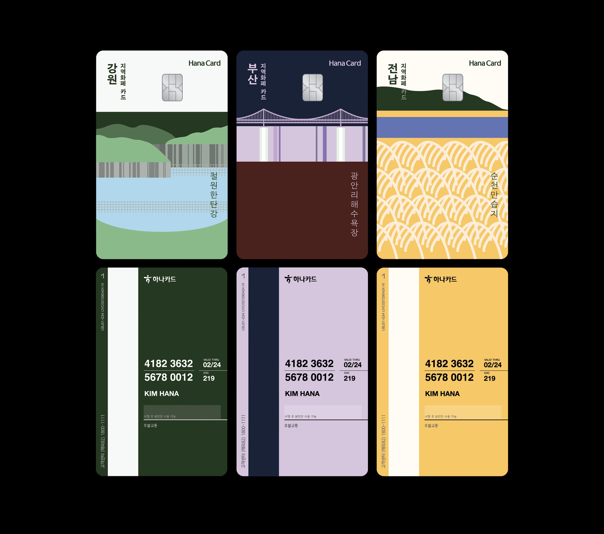
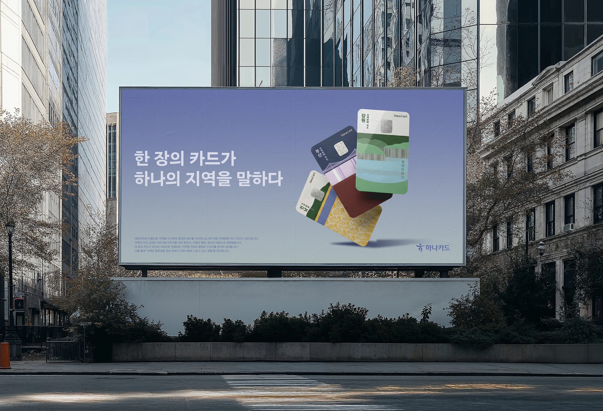
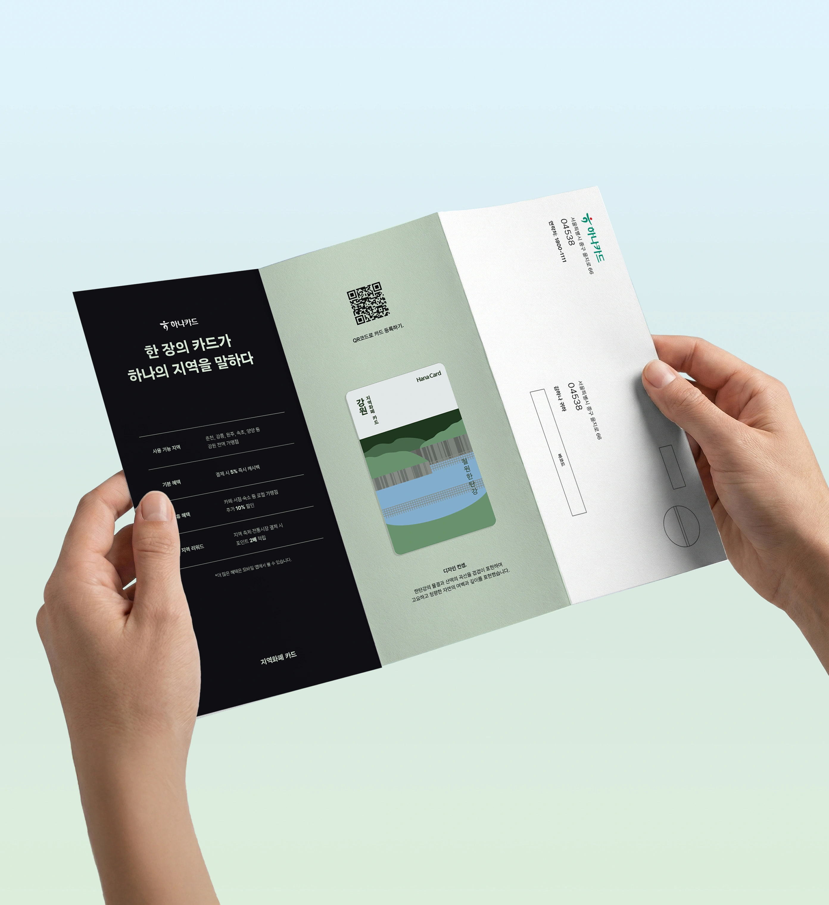

하나카드 plate 디자인, GRAPHIC DESIGN, 2025
대한민국 각 지역의 고유한 풍경과 정서를 시각적으로 재해석한 하나카드 지역화폐 카드 디자인입니다. 철원 한탄강,
부산 광안리해수욕장, 전남 순천만습지의 지역적 특성을 색채와 형태, 공간의 리듬으로 표현하고, 하나의 디자인
시스템 안에서 지역별 개성과 시리즈의 일관성을 함께 담았습니다.
총 667명이 참가한 제3회 하나카드 Plate 디자인 공모전에서 2위를 수상했습니다.


